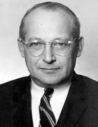
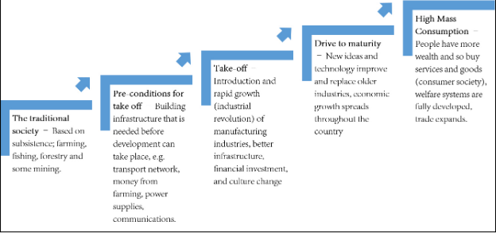
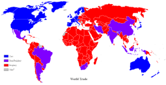

This section discusses four theories that provide the framework to study the social phenomena of economic globalization, and more specifically to examine social behavior and the factors that cause societal change.
They are the modernization theory, dependency theory, the world-systems theory, and the new international division of labor theory.


How does fair trade work?

| Wallerstein proposed that there exists in the capitalist world economy an international division of labor that separates the world into a hierarchy of three types of nations: |
Core nations - at the core of the system are the most economically advanced nations characterized by high levels of industrialization and urbanization. They benefit most from the global market and are regarded as “wealthy” because they possess a wide variety of resources, strong state institutions, a powerful military, influential global political alliances, and are located in favorable geographic locations compared with the others.
Peripheral nations - These are the poorest and least developed nations with little or no industrialization, uneven patterns of urbanization, and are dependent on core nations for capital. Peripheral nations constitute the low-income countries in Africa, South America, and the Caribbean.
Semi-peripheral nations - they are typically in-between the two types since they are considered more developed than the peripheral nations but less developed than the core nations. They are semi-industrialized or industrializing countries that process natural resources from the periphery and manufacture them for sale in core markets.
|
|
New International Division of Labor Theory
|
Worth mentioning here are examples of multilateral trade agreements such as:
Accordion
General Agreement on Tariffs and Trade (GATT) - promotes trade by reducing or eliminating trade barriers such as tariffs and quotas.
North American Free Trade Agreement (NAFTA) - allow the free movement of goods and services between USA, Canada, and Mexico.
Export Processing Zone (EPZ) - areas where factories are set up to enhance commercial and industrial exports where trade barriers are reduced or eliminated as a way of attracting foreign investment. They are usually located in areas that are close to borders, seaports, and airports.
The so-called global economy caused the emergence of a structure of global production, known as global commodity chains which is a complex pattern of international labor and production processes that result in a finished commodity, ready for sale in the marketplace. It works like this:
In theory, the introduction of foreign investments is supposed to be beneficial to developing countries in the form of job creation.
The sad reality, however, is that profits from foreign investments rarely stay in these countries, much more improving the lives of the workers.
The majority of the profits go to the owners or the capitalists or to pay for the costs like shipping, storage, and sales taxes in high-income countries.
True or False
True or False
True or False
True or False
True or False